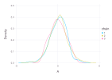
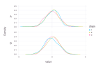
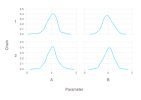
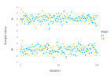

Gadfly.jl plots
To plot the Chains via Gadfly.jl, use the DataFrames constructor:
using DataFrames
using CategoricalArrays
using Gadfly
using MCMCChains
chn = Chains(randn(100, 2, 3), [:A, :B])
df = DataFrame(chn)
df[!, :chain] = categorical(df.chain)
plot(df, x=:A, color=:chain, Geom.density, Guide.ylabel("Density"))
Multiple parameters
Or, to show multiple parameters in one plot, use DataFrames.stack
sdf = stack(df, names(chn), variable_name=:parameter)
first(sdf, 5)5×4 DataFrame
| Row | iteration | chain | parameter | value |
|---|---|---|---|---|
| Int64 | Cat… | String | Float64 | |
| 1 | 1 | 1 | A | -0.0915496 |
| 2 | 2 | 1 | A | -0.0141741 |
| 3 | 3 | 1 | A | -0.252434 |
| 4 | 4 | 1 | A | -0.0527425 |
| 5 | 5 | 1 | A | 1.11506 |
and Gadfly.Geom.subplot_grid
plot(sdf, ygroup=:parameter, x=:value, color=:chain,
Geom.subplot_grid(Geom.density), Guide.ylabel("Density"))
This is very flexible. For example, we can look at the first two chains only by using DataFrames.filter
first_chain = filter([:chain] => c -> c == 1 || c == 2, sdf)
plot(first_chain, xgroup=:parameter, ygroup=:chain, x=:value,
Geom.subplot_grid(Geom.density, Guide.xlabel(orientation=:horizontal)),
Guide.xlabel("Parameter"), Guide.ylabel("Chain"))
Trace
plot(first_chain, ygroup=:parameter, x=:iteration, y=:value, color=:chain,
Geom.subplot_grid(Geom.point), Guide.ylabel("Sample value"))